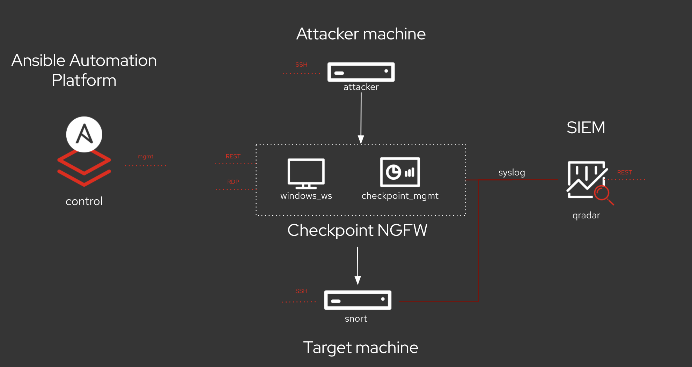

QRadar Workshop - Automatic Incident Response with Red Hat Ansible
Computer Generated Solutions (CGS) provides training solutions that improve the skills and effectiveness of your workforce in the areas of information technology, application and product knowledge, leadership, and project management. Check out the CGS Training Solution PDF
IBM® QRadar® Security Information and Event Management (SIEM) helps security teams accurately detect and prioritize threats across the enterprise, and it provides intelligent insights that enable teams to respond quickly to reduce the impact of incidents. QRadar SIEM is available on premises and in a cloud environment.
Red Hat Ansible is a simple yet powerful open source tool and IT automation engine for software provisioning, application deployment, orchestration, configuration, and administration, and orchestration that you can learn quickly. Ansible Security Automation is our expansion deeper into the security use case. The goal is to provide a more efficient, streamlined way for security teams to automate their various processes for the identification, search, and response to security events, thus helping you automate your configuration processes and simplify the administration of multiple systems. Ansible essentially pursues the same goals as Puppet, Chef, or Saltstack. Ansible is flexible, lean, and easy to start with. It is so flexible, that we can use it in our security remediation ue cases. In most use cases, it keeps the job simple.
Why this workshop?... because you are probably here for one or more of these reasons:
- Your threat investigation/remediation time is too long because it involves too many people/teams and tools
You are trying to shorten it. - You threat remediation process is fully/mostly manual because SecOps/Change Management doesn’t trust automation.
You are trying to overcome the challenge. - Your threat remediation process involves too many steps that have nothing to do with security and ITops are not supporting you.
You are trying to find a way to collaborate. - (Optional) You know that the IT Security team in your company uses QRadar and you are, or you want to become the Ansible hero.
Maybe you can help them.
This workshops showcases the above technologies for security and automation that used together, can automatically remediate your security issues in any environment. When completed, you will learn - step by step - how you can, in real life scenarios, perform security incident remediation using QRadar, by calling Red Hat Ansible, to orchestrate 3 security investigation and response activities.
Time planning
The time required to do the workshops strongly depends on multiple factors: the number of participants, how familiar those are with Linux in general and how much discussions are done in between.
Given students with basic experience with QRadar and Ansible:
- the introduction takes roughly 30 minutes
- the first exercise takes roughly one hour
- the second exercise takes roughly two hours
If your experience is different in schedulung those workshops, please let us know and fill an issue.
Lab Diagram

Objectives
This workshop will introduce you to both QRadar and Ansible, plus will show you some real life scenario use cases for automation of incident responses.
The prime benefit of QRadar SIEM for security analysts is that it detects suspected attacks or policy violations and ties helpful information together into offenses to investigate them
Some common offenses include these examples:- Malware infection
- P2P traffic
- Scanner reconnaissance
- Abnormal connection behavior
- DNS attack
- Privileged user monitoring
- Detect abnormal authentication behavior/Multiple login failures
- Compliance: Payment card industry data security standard
- Discovery of cloud usage
- Container security
- Detect multi-vector attacks
- Zero day attack detection
As a matter of fact, QRadar can do much more than those. Check out here a more extensive list of QRadar Use Cases
The usual approach is: Treat offenses as security incidents and have a security analyst investigate them.
But... what if we could automate the remediation instead of having a SOC analyst manually take care?. That is the value proposition of this workshop. Let us get into it.
Section 1 - Introduction to QRadar Incident Remediation using Ansible Automation
- Exercise 1.1 - Exploring the lab environment
- Exercise 1.2 - Introduction to IBM QRadar and Ansible Automation
- Exercise 1.3 - Configuring QRadar to Generate Events, Offenses and Run Ansible playbooks
- Exercise 1.4 - Executing the first IBM QRadar playbook
Section 2 - QRadar featuring Ansible Security Automation Use Cases
TODO: this is original content, we need to modify it to our purpose, or delete or replace it
- Exercise 2.1 - Investigation Enrichment
- Exercise 2.2 - Threat hunting
- Exercise 2.3 - Incident response
References
The following are additional resources you may want to check out:
IBM and Red Hat official resources and content
-
QRadar and Ansible integration
- Getting Started with IBM QRadar and Red Hat Ansible Automation Platform
- The IBM Security QRadar Content Collection QRadar
- QRadar 101
- QRadar SIEM
- QRadar Community Edition (CE)
- QRadar Documentation
- QRadar Support Forum
- QRadar Videos
- DeveloperWorks
- Githb
- Youtube Qradar CE
- Creating a custom rule youtube video
- Generate Demo Logs for Qradar CE Ansible
- Ansible BLog
- Ansible Tower Blog
Unofficial Resources